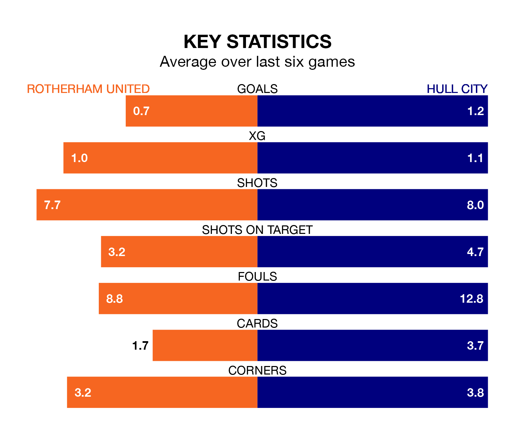

Hull City are strong favourites to take all three points despite Rotherham United's home advantage in Tuesday's late match at the AESSEAL New York Stadium.
*Betting Company* are offering odds of 1.74 on Hull sealing the win, with the visitors sitting eighth in EFL Championship table.
Rotherham, who are 24th in the league and 26 points behind the Tigers, are priced at 4.62 to win. A draw is set at 3.72.
Rotherham are in bad form in EFL Championship, with no wins and three draws from their last six games.
With three wins and three losses over that period, Hull's form is much better – they have taken nine points from 18, compared to United's three.
In the last 10 years, Rotherham and Hull have played each other on eight occasions. Rotherham won one of them, Hull five, and they drew twice.
On average, the Millers scored 1.5 goals and the Tigers 2.6 in those matches.
Their last meeting was on November 28, when Hull won 4-1 at home.
With 25 goals in 30 games so far this season, the Millers are the league's second-lowest scorers with 0.8 goals per game. And they are conceding more than average, letting in 57 goals at a rate of 1.9 per game.
City, meanwhile, are average scorers, with 1.4 goals per game. They have conceded 1.3 goals per game.
Rotherham's last match was on Saturday, a 3-0 loss against Leeds United.
Hull lost 1-0 against Swansea City last time out, also on Saturday.
Tuesday's match will be refereed by Leigh Doughty, who has taken charge of six EFL Championship games so far this season, issuing one red card and booking 22 players. He has not awarded any penalties.
The last Rotherham game Doughty refereed was a 2-0 away loss to Cardiff City on September 30. He is yet to oversee a match featuring Hull this season.
Updated: 09:02 (UTC), 13/02/24